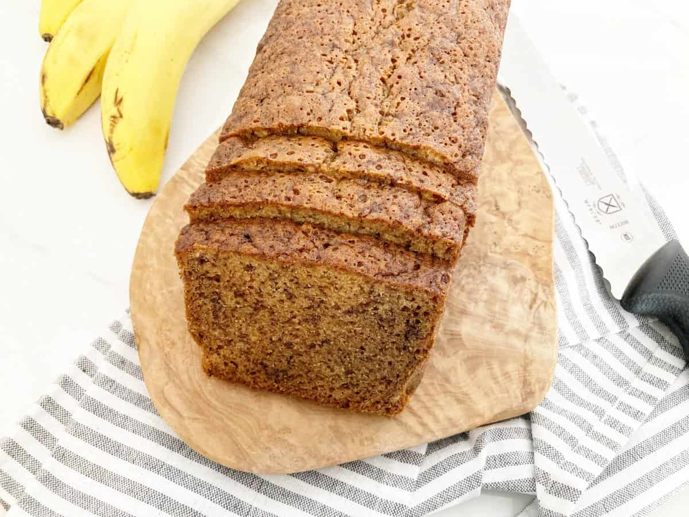

A perfectly moist banana bread with the best crust, all made without butter!
Ingredients
- 3 Large Ripe Bananas; mashed
- 1/2 Cup Vegetable Oil
- 2 Eggs
- 1 1/4 Cups All-purpose Flour
- 1/3 Cup Brown Sugar
- 1 Cup White Sugar
- 1/4 Cup Milk
- 1 Teaspoon Baking Soda
- 1/2 Teaspoon Baking Powder
- 1/2 Teaspoon Salt
- 2 Teaspoon Vanilla Extract
Directions
- Preheat oven to 325F and line a loaf pan with parchment paper.
- Into a mixing bowl add mashed bananas and eggs. Mix well with a whisk.
- Add brown and white sugars. Mix.
- Add vegetable oil, milk and vanilla extract. Mix well.
- Sift the dry ingredients, flour, baking soda, baking powder and salt into the wet mixture with a sieve
or fine strainer.
- Using a rubber spatula mix until combined about 2 minutes. Try not to overmix the batter.
- Pour batter into the lined loaf pan.
- Place into the oven and bake uncovered for 65-75 minutes until a toothpick comes out clean. The bread
will be a deep golden brown color.
- Remove from the oven and let cool in the loaf pan for 30 minutes. Carefully remove from the pan and
place on a cooling rack to fully cool. Let cool for about 1 1/2 - 2 hours for best results.
- Cut into thick slices and Enjoy.